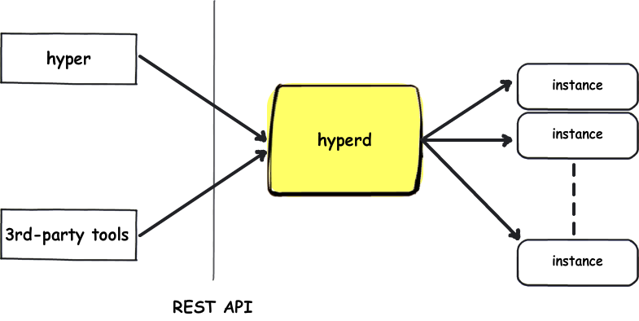
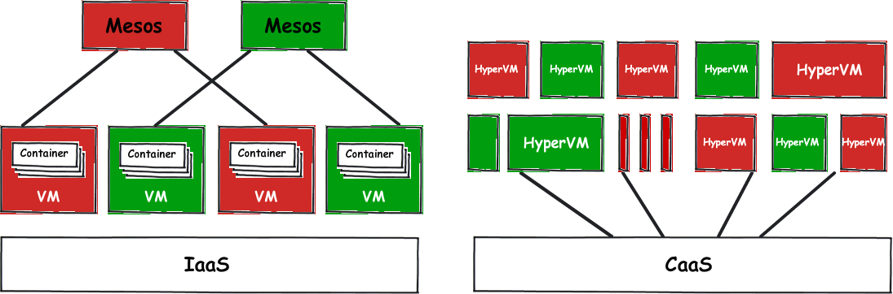

Hyper and the art of Containerization
Published on May 25, 2015
Docker, without doubt, has been a phenomenal open source technology. With the rise of Docker, the world is shifting its focus from "Machine" to "App", which is combined with the migration from (Hardware) Virtualization to Containerization.
As we believe AppContainer is the future, it is necessary to note that there are more approaches to implement it than the popular OS-level Container solution.
Virtualization could be one of the them. Let me explain.
Machine vs App
Traditionally, Virtualization is designed to emulate the hardware. The brainchild of this is the "virtual machine" (VM) as we see today. A VM is a virtual instance of a full operating system, a.k.a. "Machine". A virtual machine runs in the same way as a physical one, promising the identical contract between application, OS and hardware. Therefore, everything in the world of VM works as it used to be.
However, this perfect backward-compatibility comes with some severe compromises:
- Fat: VM images are often in tens of GBs
- Slow: it usually takes tens of seconds to boot
- Heavy: a VM instance demands hundreds MBs of memory at the minimum, which means that a dozen of VMs will overload the server
- Volatile: a VM instance tends to be long-running and suffers from various configuration drifts
Containerization, on the other hand, focus on the notion of "App". A (Docker) container cares nothing more than how to run the application, and a (Docker) image packages the minimal amount of data for the application and its dependencies. Therefore,
- Thin: a Docker image is usally 200-300 MBs
- Fast: sub-second to launch a Docker container
- Light: you can run hundreds of containers on a server, since each container consumes only the memory needed by the application
- Immutable: due to the lighting-fast boot speed, containers are short-lived, so they always run in the exact same state as the image is shipped
Docker has a neat diagram on their website to illustration the difference between these two:

However, as you may have noticed, the core idea behind Containerization has little to do with the Container technology. Instead, all values of AppContainer listed above comes from the fact of eliminating the full OS and focusing on the application.
So, the question is:
Can we build an App-centric VM, which runs like Container?
Hyper - a Hypervisor-based AppContainer solution
In short,
Hyper = Hypervisor + AppContainer Image
Hyper allows you to run any AppContainer image (Docker, rkt) with any hypervisor (KVM, Xen, etc.). What's different from Docker is that Hyper launches new VM instances to run the images, rather than creating containers:
[root@user ~:]# docker pull nginx:latest
[root@user ~:]# hyper run nginx:latest
[root@user ~:]# docker ps
[root@user ~:]#
[root@user ~:]# hyper list
.......
Done
Since Hyper is a virtualization-based solution, it does not rely on the underlying host kernel. Instead, every Hyper VM is booted with a minimalist Linux kernel, HyperKernel. Thanks to the minimalism, HyperKernel is super light. The test result shows that a Hyper VM boots in 500-800 milliseconds, making it indistinguishable from Linux container.

Moreover, upon starting, Hyper mounts the app images onto the instance, in which a tiny service, HyperStart, serves as Init process to launch applications. In this model, the application is completely "contained" within the VM instance and its kernel space, without the need to access the host facility.
Combine the best from both worlds
Aside from the isolation part, Hyper combines the best from both VM and Container:
| - | Docker | VM | Hyper |
|---|---|---|---|
| Isolation | Weak, shared kernel | Strong, HW-enforced | Strong, HW-enforced |
| Portable | Yes | No, hypervisor dependent | Yes, hypervisor agnostic and portable image |
| Boot | Fast, sub-second | Slow, tens of seconds | Fast, sub-second |
| Performance | Great | OK | Good, minimal resource footprint and overhead |
| Immutable | Yes | No, configuration management required | Yes, guest os is gone |
| Image Size | Small, MBs | Big, GBs | Small, MBs |
| Backward Compatibility | No, brand new world | Great, everything still works | Good, still a "Machine", much less changes |
| Maturity | No | Yes, production ready, SDN, SDS, LiveMigration, etc. | Yes, just plug-&-play |
| ROI | Low, rebuild everything with container | N/A | High, seamless integration with your virtual infrastructure |
Introducing the secure multi-tenant CaaS
Prior to Docker, IaaS is the de-facto form of cloud. Most cloud platforms, if not all, offer some IaaS service. Thanks to Docker, CaaS is gaining popularity as an echo of Microservices Architecture.

While the future is promising, what holding us is the lack of isolation in container. Without the necessary security, it is impossible for build a public multi-tenant CaaS platform, as different customers' applications have to share the single host kernel (no matter the host is physical or virtual).
With Hyper, the roadblock is gone. Considering that the attack surface for a VM instance is quite small (as it lacks the variety of functions provided by a full operating systems, and therefore, the potential flaws to be exploited), Hyper is able to offer the much-needed hardware-enforced isolation.
Now, we can start to build the secure, multi-tenant CaaS!
